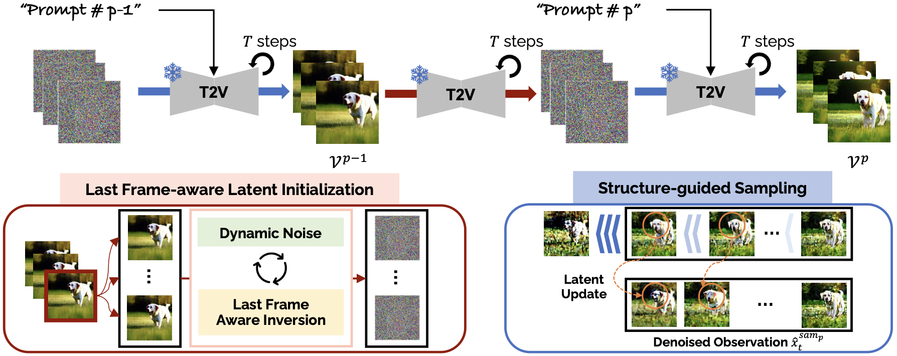
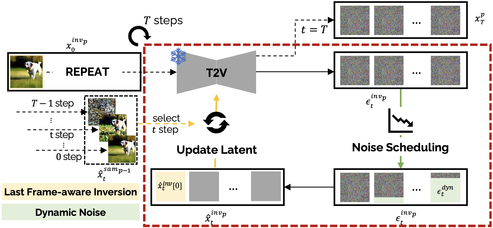

MEVG: Multi-event Video Generation with Text-to-Video Models
European Conference on Computer Vision (ECCV), 2024
TL;DR
We introduce MEVG, a training-free diffusion-based method that generates a single coherent video depicting multiple sequential events given individual text sentences — with no fine-tuning or additional video data required. A Last Frame-aware Latent Initialization (LFLI) strategy seeds each clip's latent from the previous clip's final frame, while Dynamic Noise enforces diversity and Structure-guided Sampling maintains visual consistency within each event. A novel prompt generator automatically converts coarse user scenarios into optimized per-event prompts, and MEVG outperforms zero-shot baselines in multi-event video generation.
Key Contributions
- Training-free multi-event generation — generates a video consisting of multiple events without requiring any training or additional video data.
- Last-frame-aware initialization & dynamic noise adjustment — a novel latent vector strategy enhancing temporal and semantic consistency between consecutive event clips.
- Novel prompt generator — transforms coarse text inputs into optimal per-event instructions, ensuring coherent semantic transitions throughout the generated video.
- State-of-the-art zero-shot performance — outperforms other zero-shot video generation methods in multi-event reflection while maintaining visually coherent content.
Project Design

Given multiple prompts (P) each describing a different event, MEVG chains video clips into a single, temporally coherent video. Each clip's latent is initialized from the final frame of the preceding clip via Last Frame-aware Latent Initialization (LFLI), and Structure-guided Sampling ensures visual consistency throughout each event.

(i) Structure-guided Sampling
- Maintain visual consistency within an event, which act as a regularization term.
- Differential update strategy prevent the identical latent codes across the video.
(ii) Dynamic Noise
- Enforce the diversity of the generated video with noise scheduling function.
- Noise scheduling function is monotonically decrease function.
(iii) Last Frame Aware Inversion
- Maintain a visual correlation between two different events.
- Denoised observation x̂ contains a sketcy spatial layout and context.
Results
Video Results Based on LVDM
Video Results Based on VideoCrafter1
Applications
Image & Multi-text Video Generation
MEVG accepts an input image alongside multiple text prompts to generate a video grounded in the given visual context.
Video Generation with Large Language Model (LLM)
An LLM decomposes a coarse scenario into optimized per-event prompts, enabling flexible and dynamic text input.
Conclusion
We presented MEVG, a training-free diffusion-based framework for generating temporally coherent videos from multiple sequential text prompts — requiring no fine-tuning or additional video data. By combining Last Frame-aware Latent Initialization, Dynamic Noise scheduling, and Structure-guided Sampling, MEVG effectively bridges consecutive event clips while maintaining visual and semantic consistency. A novel prompt generator further enables flexible coarse-to-optimal text input. Extensive experiments and user studies demonstrate that MEVG outperforms zero-shot baselines in temporal coherency of content and semantics, offering a practical and scalable approach to multi-event video synthesis.
Acknowledgement
Research collaboration with NVIDIA (Wonmin Byeon), contributing to the development of multi-event video generation.
This work was supported by the Institute of Information & Communications Technology Planning & Evaluation (IITP) funded by the Korean government (MSIT) under the Artificial Intelligence Graduate School Program (Korea University), and by the Culture, Sports and Tourism R&D Program through the Korea Creative Content Agency (KOCCA) funded by the Ministry of Culture, Sports and Tourism.